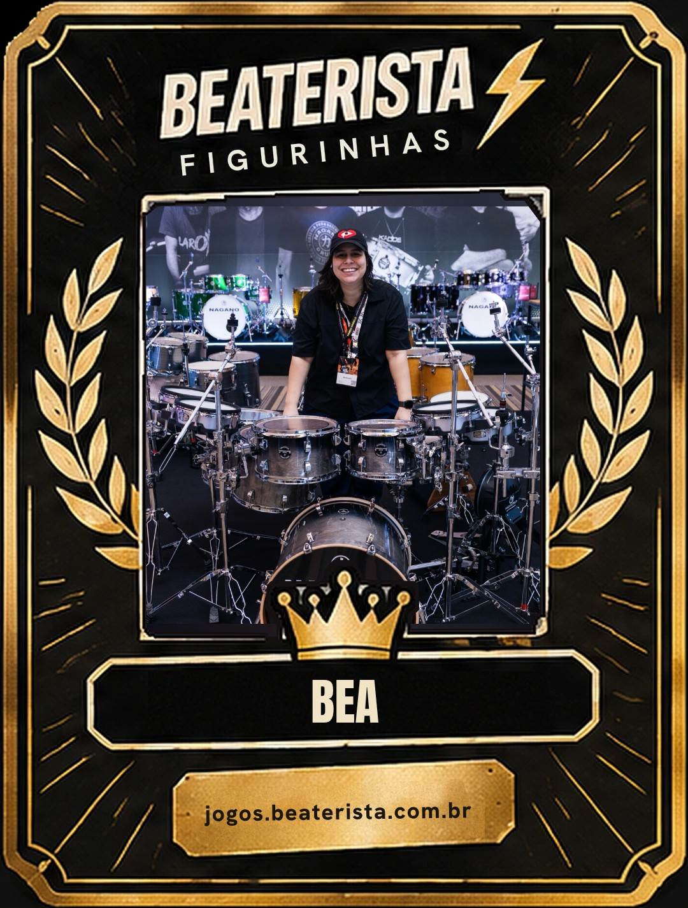

1 · faixas da marca
NOVA FIGURINHA!

jogos.beaterista.com.br
beaterista escola de música · @beaterista_
2 · caderno do Paul
nova figurinha!
★
♪ ♫
jogos.beaterista.com.br
joga lá! beaterista escola de música
3 · palco azul
NOVA FIGURINHA!
jogos.beaterista.com.br
beaterista escola de música · @beaterista_